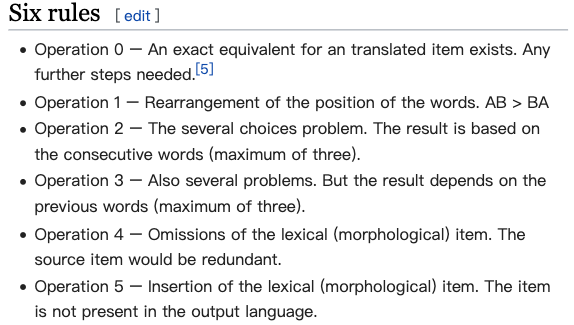
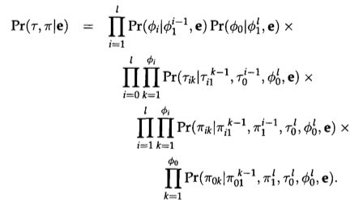
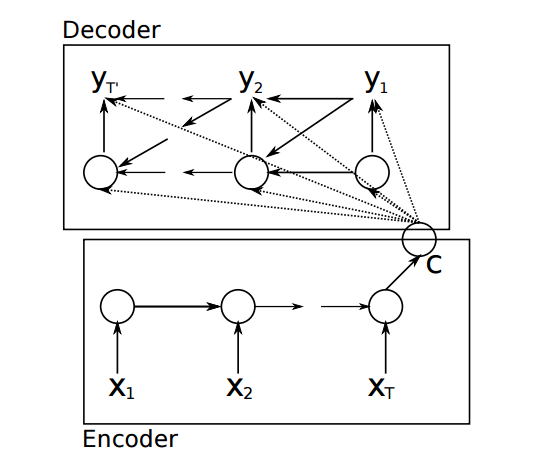
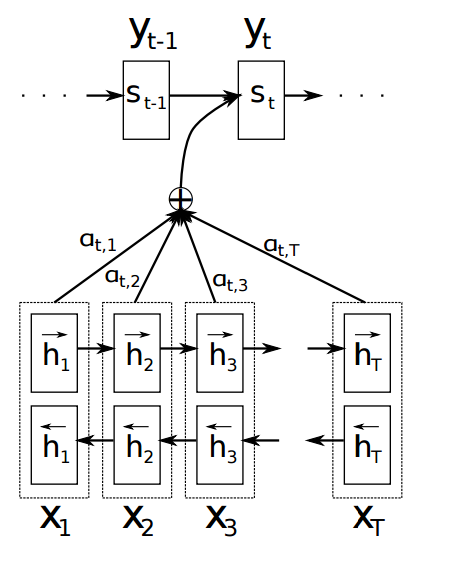
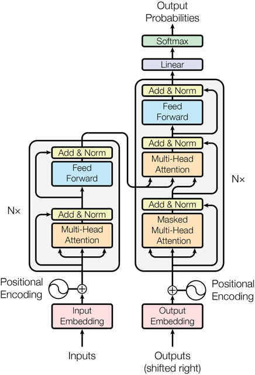

第三章 等价转换定义——机器翻译
3.1 等价转换定义的形成
机器翻译之所以在自然语言理解史上具有特殊地位，在于它第一次把理解定义为一种可验证的等价转换任务。机器翻译要求研究者面对一个更外显的问题：系统能否在跨语言转换中保持关键信息与意义关系。一个翻译系统若想把句子从源语言转到目标语言，就不能只做词对词替换；它必须处理词义选择、句法结构、上下文约束、篇章连贯乃至部分世界知识。正因如此，早期研究者把翻译看作一种对语言理解的综合检验：若系统能够翻译，那么它至少在某种程度上已经”抓住了意义”。这是一种比图灵测试更外显、也更工程化的理解定义。
这一定义背后的理论支撑来自截然不同的两个方向。从诠释学的角度，乔治·斯坦纳[1]在《巴别塔之后》中提出了更为根本的命题：理解、交流与翻译在本质上是同一个过程：翻译是理解的范式形式，一切真正的理解都包含某种意义上的”翻译” (Steiner, 1975)。
从计算语言学的角度，以色列数学家和哲学家耶胡舒亚·巴-希勒尔则用一个更具破坏力的论证从反面支持了同一结论。[2]在1960年的论文中，他提出”全自动高质量翻译”不可实现论，并以一个简单例子加以说明 (Bar-Hillel, 1960)：
“Little John was looking for his toy box. Finally he found it. The box was in the pen.”
要正确翻译最后一句中的”pen”（应为”儿童围栏”而非”钢笔”），机器必须知道玩具箱比钢笔大得多、不可能装在其中——这是任何词典都无法收录的常识推理。巴-希勒尔的结论是：翻译要求超语言的世界知识，而这恰恰就是”理解”的核心所在。
这些理论阐释了翻译对于理解的重要性：翻译之所以极难，正是因为它对理解的要求极高；反过来，真正完成高质量翻译的系统，应该具备相当程度的真实理解能力。 从图灵测试转向机器翻译，研究者尝试找到更外显、可积累的理解证据，同时也把理解压缩到了”意义能否跨语言传递”这一维度。
参考文献
Bar-Hillel, Yehoshua. 1960. The present status of automatic translation of languages. Advances in Computers, 1:91–163.
Steiner, George. 1975. After Babel: Aspects of Language and Translation. Oxford University Press, Oxford.
3.2 代表事件与实验
1949 年沃伦·韦弗[3]把翻译问题描述为信息转换和密码破译式问题，开启了机器翻译研究的早期想象 (Weaver, 1949/1952)。这里并不是在提出一套成熟的翻译系统，而是设想：如果不同语言都可以被看作某种编码形式，那么机器也许能够像处理密码一样处理翻译问题。正是这种把语言理解问题转写为通信、编码与转换问题的思路，使机器翻译第一次显得像一个可以被工程化推进的目标。
1954 年的 Georgetown-IBM 演示把这种想象第一次转化为公众可见的技术展示；它使用受限词汇、受限语法和预先设计好的规则，把部分俄语句子翻译成英语，规模并不大，却足以让公众和资助机构看到”机器翻译起步”的希望。

1993 年，Brown 等人提出的 IBM 统计翻译模型首次将翻译问题转化为概率建模任务，通过大规模双语数据自动学习翻译规律，机器翻译由此进入统计学习时代 (Brown et al., 1993)。

2015 年前后，以 Bahdanau 等人引入注意力机制为代表的一系列工作，使机器翻译进入神经网络时代 (Bahdanau et al., 2015)。此后翻译服务的流畅度和准确率持续提升。2018 年，微软研究团队声称其汉英新闻翻译系统达到与人工译员相当的水平 (Hassan et al., 2018)。尽管这一”人类同等水平”的论断引发了关于评测方法的重要争论，但该成果本身标志着神经机器翻译质量达到了新的高度。
- 沃伦·韦弗（Warren Weaver，1894-1978）是美国数学家和科学管理者，长期担任洛克菲勒基金会自然科学部主任；他在这份备忘录中首次系统构想了利用计算机进行语言翻译的可能性，被公认为机器翻译研究的奠基性设想。 ↩
参考文献
Weaver, Warren. 1949. Translation. Memorandum, The Rockefeller Foundation, New York.
Weaver, Warren. 1952. Translation. In William N. Locke and A. Donald Booth, editors, Machine Translation of Languages, pages 15–23. MIT Press, Cambridge, MA.
Dostert, Leon E. 1955. The Georgetown-I.B.M. experiment. In William N. Locke and A. Donald Booth, editors, Machine Translation of Languages, pages 124–135. MIT Press, Cambridge, MA.
Hutchins, W. John. 2004. The Georgetown-IBM experiment demonstrated in January 1954. In Proceedings of the 6th Conference of the Association for Machine Translation in the Americas (AMTA 2004), pages 102–114. Springer, Berlin, Heidelberg.
Brown, Peter F., Stephen A. Della Pietra, Vincent J. Della Pietra, and Robert L. Mercer. 1993. The mathematics of statistical machine translation: Parameter estimation. Computational Linguistics, 19(2):263–311.
Bahdanau, Dzmitry, Kyunghyun Cho, and Yoshua Bengio. 2015. Neural machine translation by jointly learning to align and translate. In Proceedings of ICLR 2015.
Hassan, Hany, Anthony Aue, Chang Chen, Vishal Chowdhary, Jonathan Clark, Christian Federmann, Xuedong Huang, Marcin Junczys-Dowmunt, William Lewis, Mu Li, Shujie Liu, Tie-Yan Liu, Renqian Luo, Arul Menezes, Tao Qin, Frank Seide, Xu Tan, Fei Tian, Lijun Wu, Shuangzhi Wu, Yingce Xia, Dongdong Zhang, Zhirui Zhang, and Ming Zhou. 2018. Achieving human parity on automatic Chinese to English news translation. arXiv preprint, arXiv:1803.05567.
3.3 历史必要性
相比图灵测试依赖少数测试者的主观感觉，机器翻译第一次将判断标准明确为可比较、可验证的外部输出：研究者不再需要争论系统是否”看上去理解了语言”，而可以直接比较源语言与目标语言之间的语义对应质量。这使理解判据从主观行为印象中分离出来，成为可被第三方重复检验、可被自动指标量化的对象。同时，机器翻译要求系统同时处理词义选择、句法映射和篇章约束等多层语言信息，理解因此被看做一组可拆解的子问题，促进了相关方向技术研究，有其重要的意义。
此外，翻译天然地将理解限定在”文字表述”层面。系统只需要处理文本之间的语义对应，而不需要知道如何移动机械臂、如何回答复杂的医学诊断问题，这些可能要求更高的智能水平。这种限定既是收缩，也是聚焦：它使研究者可以暂时搁置对物理世界交互能力、复杂学科知识的讨论，集中考察语言理解本身在智能中的核心作用。从这一角度看，机器翻译提供的是一条在可操作性和理论深度之间取得平衡的研究路径。
3.4 技术进展
在上述条件依次成熟的过程中，机器翻译经历了三个技术时代，分别是规则机器翻译、统计机器翻译和神经网络机器翻译。这一技术发展过程是跟外部条件的发展紧密相关的。1950至80年代，存储和算力极为有限，能够处理的数据规模很小，只有规则和词典这类轻量知识表示才在工程上可行。因而早期方法依赖语法规则、双语词典和人工编码转换关系。
1990年代起，研究人员收集整理的数据规模有一定增大，而计算设备的存储和处理能力也在增强。这为统计方法提供了生存土壤。互联网的兴起进一步扩大了可获取的双语数据规模，也伴随着统计学习技术的兴起和发展，研究者不再要求把全部语言知识显式写出，而是通过概率模型从数据中发掘翻译规律 (Brown et al., 1990)。
2010年代，GPU 加速使神经网络训练的成本大幅下降，更大规模的数据使得神经网络的参数能得到足够好的训练，因而神经网络机器翻译技术兴起和发展起来，把表示学习与端到端优化引入翻译学习过程 (Bahdanau et al., 2015)。
以下简要介绍这三个时代的机器翻译技术发展情况，以及对机器翻译进行评价的技术发展情况。
3.4.1 规则翻译系统：人工构建的跨语言知识
规则机器翻译的思路是通过人工分析并编写的规则处理语言间的对应关系，这在本质上与前文提到的 ELIZA 和 SHRDLU 属于相同的技术手段。系统的翻译过程通常分为三个环节：分析（源语言解析）、转换（跨语言映射）、生成（目标语言合成）。
以英语 “The old red house is beautiful.” 翻译为中文 “那座古老的红色房子很漂亮。” 为例，系统需要完成以下规则操作。
（1）源语言分析规则（词法与句法解析）
翻译的第一步不是直接查词，而是先分析源语言句子的结构。以本句为例，系统需要依次完成两类分析：
词性标注（POS tagging）：为每个词标注语法类别。
The/DET old/ADJ red/ADJ house/NN is/VBZ beautiful/JJ ./.句法分析（parsing）：构建句子的层级结构。
S
┌──────┼──────────┐
NP VP
┌──┼──────┐ ┌────┴────┐
DET ADJ NN VBZ JJ
│ │ │ │ │
The old red house is beautiful句法分析结果是后续所有转换操作的骨架：系统据此知道 “The” 与 “house” 同属一个名词短语、“is beautiful” 构成谓语，而不是逐词线性处理。
（2）词汇转换规则（双语词典）
每个源语言词条对应一到多个目标语言候选，并附有词性信息：
the → 那/这（定指→指示词；或根据语境省略）
old → 古老的（形容词）
red → 红色的（形容词）
house → 房子（名词，建筑类，量词"座"）
is → ∅（系动词→中文通常省略）
beautiful → 漂亮（形容词）（3）短语转换规则（系动词处理）
英语 “be + 形容词” 结构在中文中通常省略系动词，并添加程度副词 “很”：
[V-be] [ADJ] → [很] [ADJ]
（系动词省略，形容词前插入"很"）
is beautiful → 很 漂亮（4）目标语言合成规则（量词添加规则（中文特有））
中文名词前须加量词，英文没有对应结构。规则需为每类名词指定匹配量词：
[det] [N] → [det] [CL:class(N)] [N]
（当匹配到"限定词+名词"结构时，查名词类别并插入对应量词）
the house → 那 座 房子
（建筑类 → 座）
the paper → 那 张 纸
（扁平类 → 张）量词规则是英中翻译中规模最大的规则集之一，仅常用名词就需要覆盖数百个量词对应关系。
经以上规则链式处理，最终组合得到 “那座古老的红色房子很漂亮。”
这套体系的优点是透明可解释，只要有语言专家就可构建。但是规则系统的局限仍然存在。比如，难以保证规则覆盖所有可能的情况，在未能有效覆盖的语言现象上往往带来错误；而真实语言句子往往需要数十条规则链式应用，任何一步歧义或错误都会级联影响后续。以量词规则为例，“一张纸”和”一张桌子”都用”张”，但并非所有名词都可以接”张”（如不能说”一张书”），这类边界难以穷举，人工维护代价极高。
3.4.2 统计翻译系统：从平行数据自动学习
统计机器翻译不再要求人工总结语言规律，转而让系统在大量对齐双语数据（平行语料）上自动学习翻译规则及其概率。由于大部分容易获得的双语资源是以句子为单位对应，Brown 等人（1990）的 IBM 系列模型 通过 EM（期望最大化）算法迭代估计词对词的翻译概率，从而得到类似上一节的词语映射关系。
以句对 “The house is old.” / “那所房子很旧。” 为例，经过多次迭代后，模型学到如下翻译概率（示意值）：
P(房子 | house) ≈ 0.87 P(那所 | the ) ≈ 0.65
P(房子 | the ) ≈ 0.02 P(很 | is ) ≈ 0.54
P(旧 | old ) ≈ 0.83 P(旧 | is ) ≈ 0.09对应的词对齐矩阵（示意值，数值越高表示对应概率越大）：
那所 房子 很 旧
the [0.65] [0.04] [0.01] [0.01]
house [0.04] [0.87] [0.02] [0.02]
is [0.05] [0.03] [0.54] [0.09]
old [0.01] [0.02] [0.07] [0.83]这个矩阵揭示了统计系统自动发现的一个有趣规律：“is”以较高概率对齐到中文的”很”（0.54）。系统无需任何语法知识，仅从大量平行句对中就归纳出”be + adj”在中文里通常表达为”很 + adj”的规律。在词对齐的基础上，系统进一步提取短语表：“is old”作为整体短语对应”很旧”，这意味着系统自动学到了系动词与形容词的整体搭配，而不需要人工编写系动词处理规则。
相对于规则系统，统计系统不依赖语言学专家知识，所有规律来自数据归纳，包括量词对应、词序差异和系动词处理等，因此覆盖面更广、维护成本更低。代价是完全不透明：系统无法解释为什么”is”对应”很”而不是”是”；且对于平行数据稀少的语言对，性能会急剧下降。
这两种方式的对比，在方法论上正好呼应了整个自然语言理解历史的一条主线：明确的人工知识与从数据中自动归纳的统计规律，始终处于竞争与互补之中。
值得注意的是，统计方法虽然自动发掘翻译规则，但是规则的形式和应用方法仍然需要人工设计，并且不同形式的规则其特点不同，其应用方法也需要专门设计。这使得统计机器翻译系统逐步演化成若干相互串联的工作模块，每个模块的设计都有可能制约整个系统的性能。
3.4.3 神经网络机器翻译：端到端学习
神经网络机器翻译将翻译视为一个端到端的序列转换问题，并使用循环神经网络等通用计算结构来进行建模和学习 (Sutskever et al., 2014)，大幅减少了翻译系统中人工设计的部分。在神经网络学习过程中，还同时学习了词汇符号的连续表示，作为对其语言含义和用法的表征，这也是词汇理解的一种实现路径。

以 “The house is old.” 翻译为 “那所房子很旧。” 为例，神经网络机器翻译系统一般由编码器（encoder）和解码器（decoder）两部分构成：
第一步：将离散符号转为连续表示。 编码器首先将源语言句子中的每个词映射为一个固定维度的实数向量，这个过程称为词嵌入（word embedding）：
"the" → [0.12, -0.34, 0.56, ..., 0.08] (d_model = 512)
"house" → [0.45, 0.21, -0.13, ..., -0.32]
"is" → [-0.02, 0.67, 0.31, ..., 0.15]
"old" → [0.33, -0.11, 0.74, ..., -0.28]这些向量不是人工设计的，而是在训练过程中自动学到的。相似用法的词会获得相近的向量，这使系统在”符号—概念”之间建立了一层可计算的中间表示。
第二步：编码器逐词读入并积累上下文信息。 编码器是一个循环神经网络（RNN），它按顺序读入每个词的向量，每读入一个词就更新一次自己的内部状态。RNN 的状态向量可以理解为系统对”到目前为止读到的内容”。读完全部四个词后，编码器的整体状态可以看做是整个句子的语义表示。
第三步：解码器逐词生成译文。 解码器拿到编码器的最终状态后，开始生成目标语言句子。生成过程也是一个词一个词地进行：每生成一个词，解码器就把这个词的向量和当前状态一起输入 RNN，产生新的状态，再由状态计算下一个词的概率分布并选出最可能的词：
生成步骤 解码器当前状态 输出概率最高的词
─────────────────────────────────────────────
第1步 [编码器最终状态] → "那所" (P=0.42)
第2步 [更新后状态] → "房子" (P=0.58)
第3步 [更新后状态] → "很" (P=0.71)
第4步 [更新后状态] → "旧" (P=0.63)
第5步 [更新后状态] → <EOS> (P=0.89, 结束)在此基础上，Bahdanau 等人引入的注意力机制使模型可以在生成每个目标词时动态关注源语言句子中更相关的位置，缓解了早期编码器—解码器模型将整句压成固定向量的信息瓶颈 (Bahdanau et al., 2015)。Vaswani 等人提出的 Transformer 架构用自注意力替代循环结构，更适合并行训练，也更擅长建模长距离依赖 (Vaswani et al., 2017)。Transformer 最初围绕翻译任务展示其优势，随后迅速发展为通用语言建模架构。GPT-1 等模型将 Transformer 解码器用于语言模型的大规模无监督预训练并迁移到各类下游理解任务，证明翻译中发展出的架构可以成为通用语言理解能力的基础 (Radford et al., 2018)。


参考文献
Brown, Peter F., John Cocke, Stephen A. Della Pietra, Vincent J. Della Pietra, Fredrick Jelinek, John D. Lafferty, Robert L. Mercer, and Paul S. Roossin. 1990. A statistical approach to machine translation. Computational Linguistics, 16(2):79–85.
Bahdanau, Dzmitry, Kyunghyun Cho, and Yoshua Bengio. 2015. Neural machine translation by jointly learning to align and translate. In Proceedings of ICLR 2015.
Forcada, Mikel L., Mireia Ginestí-Rosell, Jacob Nordfalk, Jim O’Regan, Sergio Ortiz-Rojas, Juan Antonio Pérez-Ortiz, Felipe Sánchez-Martínez, Gema Ramírez-Sánchez, and Francis M. Tyers. 2011. Apertium: a free/open-source platform for rule-based machine translation. Machine Translation, 25(2):127–144.
Papineni, Kishore, Salim Roukos, Todd Ward, and Wei-Jing Zhu. 2002. BLEU: a method for automatic evaluation of machine translation. In Proceedings of ACL 2002, pages 311–318. Association for Computational Linguistics.
Zhang, Tianyi, Varsha Kishore, Felix Wu, Kilian Q. Weinberger, and Yoav Artzi. 2020. BERTScore: Evaluating text generation with BERT. In Proceedings of ICLR 2020.
Sutskever, Ilya, Oriol Vinyals, and Quoc V. Le. 2014. Sequence to sequence learning with neural networks. In Advances in Neural Information Processing Systems 27 (NeurIPS 2014), pages 3104–3112.
Vaswani, Ashish, Noam Shazeer, Niki Parmar, Jakob Uszkoreit, Llion Jones, Aidan N. Gomez, Łukasz Kaiser, and Illia Polosukhin. 2017. Attention is all you need. In Advances in Neural Information Processing Systems 30 (NeurIPS 2017), pages 5998–6008.
Radford, Alec, Karthik Narasimhan, Tim Salimans, and Ilya Sutskever. 2018. Improving language understanding by generative pre-training. Technical report, OpenAI.
3.5 技术支撑与局限
长期以来，机器翻译被视为语言理解能力的一种证据，然而，机器翻译本身的质量评价也面临很大挑战：翻译具有一定的主观性，不同的翻译人员对同一段源语言文字可能会产生不同的译文，不同译文的用词、句式乃至风格选择可能差异显著，这是语言本身的多样性带来的必然结果。即使人工评价能够得到相对一致、稳定的判断，但其成本高昂且耗时较长，在翻译系统研发过程中难以快速给出反馈。
为此，研究人员开始探索对机器翻译结果进行自动评价的方法，以期可以快速、准确地给出质量分数。BLEU 等自动评测指标通过比较机器译文与人工参考译文在 n-gram 重合上的程度给出质量分数 (Papineni et al., 2002)，极大降低了大规模比较系统的门槛。随着神经网络方法的深入，基于预训练语言模型的评测指标（如 BERTScore）开始出现，尝试从语义相似度而非字面匹配的角度评估翻译质量，在自动评测的可靠性上继续推进 (Zhang et al., 2020)。
以机器翻译为核心的探索把复杂语言能力转换为一种自动指标，积累规则、数据资源和人工标记，并不断研发相关技术，引发了一整套后来长期主导 NLP 的研究基础设施。 但机器翻译的指标计算，却也把”理解是否成立”压缩成了可计算分数，分数天然更容易捕捉表面可比性，而不容易完整捕捉语义细节、文体效果和交际目的。技术支撑体系一方面让研究获得了空前的累积能力，另一方面也倾向于把可测量的翻译质量越来越自然地当作可测量的理解本身，这有时候反而会导致过于追求翻译质量本身的提升，而忽视了整体语言理解能力的提升的问题。
比如，系统可能仅学会了源语言与目标语言之间表层的词语对应关系（“左”翻译为”left”），却不知道这些词语所指向的实际对象或概念。翻译的定义本就不包含对系统展开实际动作的要求，它不需要向”左”移动机械臂。也正因为缺少行动层面的检验，上述问题在翻译的范围中很难被发现。这有可能引起对理解的误判。
正因如此，机器翻译既长期占据中心，又最终推动研究走向能力分解：把其中隐含的语言能力逐项拆出，分别建模、分别标注、分别评测。理解定义开始从”能否整体保持意义”转向”能否在若干局部问题上稳定表现出理解能力”。
3.6 本章思考题
参考讨论见附录”第三章思考题参考讨论”。
- 机器翻译为什么会比图灵测试更像一种”硬标准”？它究竟更硬在输出结果可比，还是更硬在它迫使系统面对意义保持问题？
- 翻译是否真的比对话更接近理解，还是只是更容易被标准化地评测和比较？
- 能否举一个具体翻译例子，说明高质量翻译需要的不只是词汇替换，还需要语境判断、歧义消解乃至世界知识？
- 反过来，能否举一个例子说明：译文即便看起来通顺，也不代表系统真正把握了原文的交际意图或语用效果？
- 像 BLEU 这样的自动指标，一方面推动了研究进步，另一方面也可能让人把”可计算的译文质量”误当成”可计算的理解本身”；这种替代关系的收益与风险分别是什么？
- 如果一个系统翻译能力极强，但在问答、规划与交互中表现一般，是否可以说它已经”理解了语言”？为什么？